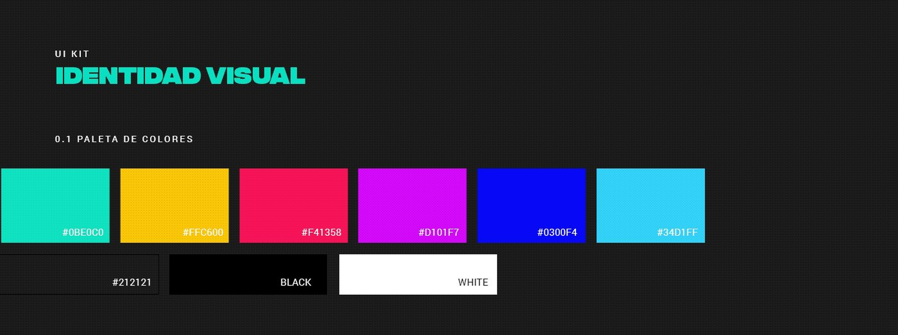
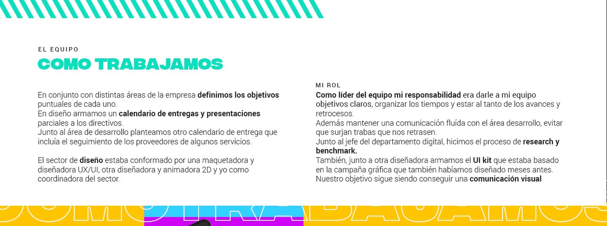

From graphic design to product design at one of Argentina's most-listened-to digital media outlets. Metro was the project where I stopped thinking only in interfaces and started understanding digital products as systems where business needs, technology and users coexist.

When I joined Metro in 2017, audiences were migrating to mobile devices and digital platforms. Radio stations and traditional media had to rethink the experience of their online products.
The website stopped being an extension of the radio and became a digital product with its own goals for audience, content and monetization. At the same time, new formats were gaining traction: live video streams, on-demand content, program clips, podcasts and multimedia content.
We analyzed the experience as radio listeners and researched other stations in the country and abroad. We compared the most-visited news sites in Argentina, analyzed user profiles and behavior with analytics, and complemented that with Hotjar heatmaps.
We ran heuristic tests and conversations with users. Page load, banners and refresh were identified as the main pain points — so we thought not only about design but also about load optimization and how to fit advertising in more organically.

Advertising is how the product gets monetized. The challenge was fitting it in without hurting the experience — making it feel like part of the content, not an interruption.
The site had an old design, patched and retouched without any orderly process. There was no dedicated place for the brand's own content. Elements weren't consistent, and key navigation heuristics weren't being met.
An accessible player on desktop and mobile, well designed across devices, with continuous playback while navigating between sections.
Podcasts, live sessions at Estudio Cerati, exclusive coverage and interviews — formats the old site never accounted for.
View favorite clips, edit personal info, and select, trim, download and save audio snippets to your profile.
A consistent, brand-integrated UI Kit that we rolled out across Metro 95.1, Infocampo, El Federal, Bacanal and Puls Urbano — keeping system coherence while giving each editorial personality its own visual differentiation.
Conversion improved significantly, and visits and time on site doubled. The website stopped being a secondary channel and became a product with its own audience, goals and metrics.
The work was rolled out across the group's five brands, keeping system coherence while giving each brand its own visual differentiation. It was the first design system I ever built — before I even called it that.
I joined as a graphic designer, and at Metro I started bringing in research, metrics analysis and decision validation as part of the process. That's where I understood that designing a digital product isn't just about interfaces — it's about understanding the business, the people and the technology at the same time.